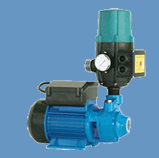

|
PRESURIZADOR CON UNA BOMBA Y UN KIT PARA SUMINISTRO DE PRESIÓN CONSTANTE
|
 |
| Descripción |
| Consiste en un Sistema Hidroneumático completo en forma de paquete que proporciona agua a presión constante, en toda la red hidráulica de la casa. |
|
 |
Preskit con bomba
Aqua Pak |
|
|
| |
| Características |
Por su diseño al tener el presurizador pegado a la descarga, tenemos un mínimo recorrido de aspiración y reduce pérdidas de carga.
Fácil de instalar, ya que se suministra completamente armado y probado, solo requiere de alimentación eléctrica, conectar succión del equipo a la fuente de alimentación de agua y la descarga a la red de la tubería. |
|
|
|
| |
| Ventajas |
Paquete |
Incluye bomba (Aqua Pak o Delta), adaptador inoxidable, juegos de cables, terminales y presurizador Pres 10.
.:Ver Modelos:. |
|
|
- Equipo completamente compacto en cualquiera de sus presentaciones. |
|
- Operación Automática. |
|
- Precios competitivos . |
|
- Tiempo de entrega muy corto. |
|
- Garantía. |
| - No
necesita tanque ni equipo de control como interruptor
de presión y manómetro, gracias a una tarjeta
electrónica
y su manómetro integrado. |
|
| |
|